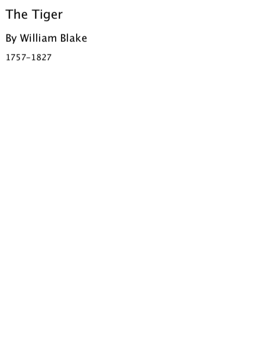
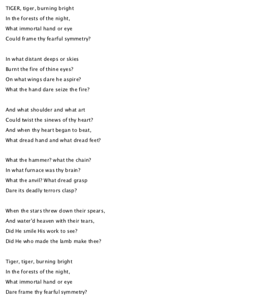

12 Example
#lang racket (require "../main.rkt") (detail #:formats? '("tiger.pdf") (lambda() (detail-page (lambda () (detail-h1 "The Tiger") (detail-h2 "By William Blake") (detail-h3 "1757-1827"))) (detail-page (lambda () (detail-line "TIGER, tiger, burning bright ") (detail-line "In the forests of the night, ") (detail-line "What immortal hand or eye ") (detail-line "Could frame thy fearful symmetry? ") (detail-line "") (detail-line "In what distant deeps or skies ") (detail-line "Burnt the fire of thine eyes? ") (detail-line "On what wings dare he aspire? ") (detail-line "What the hand dare seize the fire? ") (detail-line "") (detail-line "And what shoulder and what art ") (detail-line "Could twist the sinews of thy heart? ") (detail-line "And when thy heart began to beat, ") (detail-line "What dread hand and what dread feet? ") (detail-line "") (detail-line "What the hammer? what the chain? ") (detail-line "In what furnace was thy brain? ") (detail-line "What the anvil? What dread grasp ") (detail-line "Dare its deadly terrors clasp? ") (detail-line "") (detail-line "When the stars threw down their spears, ") (detail-line "And water'd heaven with their tears, ") (detail-line "Did He smile His work to see? ") (detail-line "Did He who made the lamb make thee? ") (detail-line "") (detail-line "Tiger, tiger, burning bright ") (detail-line "In the forests of the night, ") (detail-line "What immortal hand or eye ") (detail-line "Dare frame thy fearful symmetry? ")))))
above code will output a pdf file: tiger.pdf
the two pages of pdf file’s screen shot:

